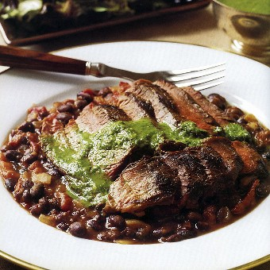

Grilled Steak over Black Beans with Chimichurri Sauce

Description
- A delicious dinner with South American flair is ready in no-time with a marinated skirt steak on a bed on black beans. Piquant chimichurri sauce is a favorite accompaniment to grilled meats. Serve bread alongside to soak up the sauce; you won't want to miss a drop.
Ingredients
-
- 2 tbsp cooking oil
- 1 onion, chopped
- 3 cloves garlic, minced
- 3 cups black beans, drained and rinsed
- 1 cup chicken broth or stock
- 2/3 cup crushed tomatoes
- 1 7-oz jar sliced pimentos, drained
- 1 bay leaf
- 1 tsp salt
- 1 1/2 lb sirloin steak, about 1 inch thick
- 1/4 tsp fresh-ground black pepper
- Chimichurri Sauce
Steps
-
- In a medium saucepan, heat 1 tablespoon of the oil over moderately low heat. Add the onion and garlic and cook, stirring occasionally, until translucent, about 5 minutes. Add the beans, broth, tomatoes, pimentos, bay leaf, and 1/2 teaspoon of the salt. Simmer until thickened, about 20 minutes. Remove the bay leaf.
- Light the grill or heat the broiler. Rub the steak with the remaining oil; sprinkle with the remaining salt and the pepper. Grill or broil for 4 minutes. Turn; cook to your taste, about 4 minutes longer for medium-rare. Cut into thin diagonal slices. Top the beans with the steak and sauce.
Suggested Pairing
- This robust dish needs a rollicking red. Go for an all-American Napa, Sonoma, or Amador Zinfandel for spiciness and big fruit flavor.
Back to Home Page